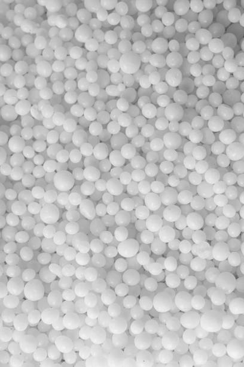
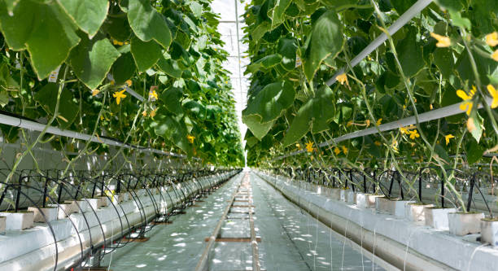
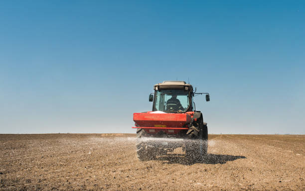
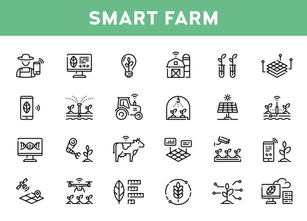
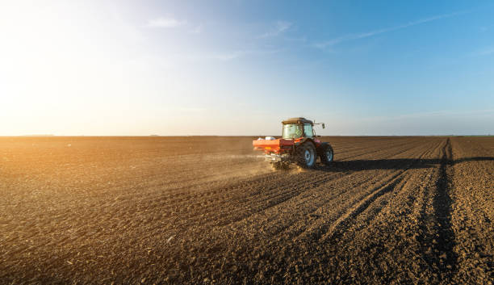

Sack bag and granular mineral fertilizer, closeup Sack bag and granular mineral fertilizer, closeup artificial fertilizers stock pictures, royalty-free photos & images
Farmer`s hand in blue glove holds white fertilizer for plants. Big bag with chemical NPK fertilizer for plants artificial fertilizers stock pictures, royalty-free photos & images
Farmer taking pellets of ammonium nitrate from bag, closeup. Mineral fertilizer Farmer taking pellets of ammonium nitrate from bag, closeup. Mineral fertilizer artificial fertilizers stock pictures, royalty-free photos & images
Tractor spreading artificial fertilizers in field Tractor spreading artificial fertilizers in field artificial fertilizers stock pictures, royalty-free photos & images
One woman farmer is fertilizing the lawn soil. Fertilizer For Lawns in springtime for the perfect lawn. One woman farmer is fertilizing the lawn soil. Fertilizer For Lawns in springtime for the perfect lawn. High quality photo artificial fertilizers stock pictures, royalty-free photos & images
Person in gloves taking pellets of ammonium nitrate from bag, closeup. Mineral fertilizer Person in gloves taking pellets of ammonium nitrate from bag, closeup. Mineral fertilizer artificial fertilizers stock pictures, royalty-free photos & images
Spraying Spraying the herbicides on the green field artificial fertilizers stock pictures, royalty-free photos & images
Tractor spreading artificial fertilizers. Transport, agricultural. Tractor spreading artificial fertilizers. Transport, agricultural. artificial fertilizers stock pictures, royalty-free photos & images
Fertilizers powder pour in a pile inside a warehouse of chemical plant. Ammonium sulfate powder pour in a pile inside a warehouse of chemical plant. Mineral organic fertilizers for agriculture industry. artificial fertilizers stock videos & royalty-free footage00:15
In vitro fertilisation concept. In vitro fertilisation concept. Artificial insemination or fertility treatment macro photography. artificial fertilizers stock pictures, royalty-free photos & images
Science laboratory engineer adding cells to test tubes Science laboratory engineer adding cells to test tubes, preparing for oocyte vitrification, to preserve high-quality eggs for future artificial insemination artificial fertilizers stock pictures, royalty-free photos & images
Artificial insemination or in vitro fertilization Artificial insemination or in vitro fertilization. 3D illustration artificial fertilizers stock pictures, royalty-free photos & images
Excavator collects red potassium agricultural fertilizers Excavator collects red potassium agricultural fertilizers in warehouse. Prepare chemical plant products for packaging. Mineral salt materials artificial fertilizers stock pictures, royalty-free photos & images
white urea chemical fertilizer Close up shot of white urea chemical fertilizer artificial fertilizers stock pictures, royalty-free photos & images
Human fertility In vitro fertilization set. Embryo development stage. Egg cell icon. Sperm collecting, processing in lab. Gene testing and cyropreservation concept. Medical poster for clinic. Flat vector illustration artificial fertilizers stock illustrations
Woman making injection with syringe pen Close up of young female diabetic patient artificial fertilizers stock pictures, royalty-free photos & images
Agricultural robots work in smart farms, Robot spraying fertilizer on corn fields, Smart agriculture farming concept. Video of Agricultural robots work in smart farms, Robot spraying fertilizer on corn fields, Smart agriculture farming concept. artificial fertilizers stock videos & royalty-free footage00:15
agricultural fertilizer in a laboratory, farming and crop concept Green agricultural, mineral fertilizer in the production laboratory, science and chemistry tools, colorful image shot with Nikon D800, horizontal artificial fertilizers stock pictures, royalty-free photos & images
Granules of mineral fertilizer close-up. Granules of mineral fertilizer close-up. artificial fertilizers stock pictures, royalty-free photos & images
3d illustration artificial insemination, fertilisation, Injecting sperm into egg cell. Assisted reproductive treatment. 3d illustration artificial insemination, fertilisation, Injecting sperm into egg cell. Assisted reproductive treatment artificial fertilizers stock pictures, royalty-free photos & images
Regenerative agriculture vs conventional soil practices outline diagram Regenerative agriculture vs conventional soil practices outline diagram. Labeled educational farming systems as compared sustainable, organic gardening versus intensive cropping vector illustration. artificial fertilizers stock illustrations
Spraying green field Spraying green field artificial fertilizers stock pictures, royalty-free photos & images
Tractor spreading artificial fertilizers in field Tractor spreading artificial fertilizers in field artificial fertilizers stock pictures, royalty-free photos & images
test tube with dropper overlay with DNA strand and ultrasound image of baby in pregnancy in concept of human baby in vitro fertilization laboratory research background of laboratory test tube with dropper overlay with DNA strand and ultrasound image of baby in pregnancy in concept of human baby in vitro fertilization artificial fertilizers stock pictures, royalty-free photos & images
Close-up of a Farmer Adding Artificial Fertilizer to the Soil Close-up of a Farmer Adding Artificial Fertilizer to the Soil. artificial fertilizers stock videos & royalty-free footage00:14
put some fertilizer gmo or poison in shovel in the soil under small plant put some fertilizer gmo or poison in shovel in the soil under small plant artificial fertilizers stock pictures, royalty-free photos & images
Pellets of ammonium nitrate as background, top view. Mineral fertilizer Pellets of ammonium nitrate as background, top view. Mineral fertilizer artificial fertilizers stock pictures, royalty-free photos & images
One woman farmer is fertilizing the lawn soil. Female hand of worker, Fertilizer For Lawns in springtime for the perfect lawn. One woman farmer is fertilizing the lawn soil. Female hand of worker, Fertilizer For Lawns in springtime for the perfect lawn. High quality photo artificial fertilizers stock pictures, royalty-free photos & images
Unrecognizable man laying down sod rolls Worker, gardener installing sod rolls for a new lawn. Wearing protective gloves while unrolling the sod. artificial fertilizers stock pictures, royalty-free photos & images
Woman holding pile of granular mineral fertilizer over grains, top view. Space for text Woman holding pile of granular mineral fertilizer over grains, top view. Space for text artificial fertilizers stock pictures, royalty-free photos & images
Sack bag and granular mineral fertilizer, top view Sack bag and granular mineral fertilizer, top view artificial fertilizers stock pictures, royalty-free photos & images
Farmer fertilizing arable land with nitrogen, phosphorus, potassium fertilizer Farmer fertilizing arable land with nitrogen, phosphorus, potassium fertilizer artificial fertilizers stock pictures, royalty-free photos & images
Aerial view on tractor as spread fertilizer over agricultural field Above top view on tractor as throws, fertilizing arable farmland for new crop, dragging mounted agricultural machine for spreading artificial fertilizer. artificial fertilizers stock videos & royalty-free footage00:14
Farmer holding pile of ammonium nitrate pellets over bag, top view. Mineral fertilizer Farmer holding pile of ammonium nitrate pellets over bag, top view. Mineral fertilizer artificial fertilizers stock pictures, royalty-free photos & images
Scientist working on GMO bananas Scientist working on GMO bananas in lab artificial fertilizers stock pictures, royalty-free photos & images
Woman making injection with syringe pen Woman making hormonal therapy injection into her belly. Close up syringe pen. Person in bedroom, in vitro fertilisation treatment. artificial fertilizers stock pictures, royalty-free photos & images
Tractor with high wheels is making fertilizer on young wheat Tractor with high wheels is making fertilizer on young wheat. The use of finely dispersed spray chemicals. Tractor on the sunset background. artificial fertilizers stock pictures, royalty-free photos & images
Artificial insemination. Needle puncture the cell membrane Cell injection - artificial insemination. Needle puncture the cell membrane. Spermatozoon in egg. Isolated on black background. 3d render artificial fertilizers stock pictures, royalty-free photos & images
In vitro fertilization with parents, wife standing together with husband. Artificial insemination. Reproductology and reproductive health. Infertility diagnosis and treatment. Pregnancy monitoring In vitro fertilization with parents, wife standing together with husband. Artificial insemination. Reproductology and reproductive health. Infertility diagnosis and treatment. Pregnancy monitoring artificial fertilizers stock illustrations
Hydroponics Farm Growth Crop 4K Biotechnology and GMO NON-GMO concept artificial fertilizers stock videos & royalty-free footage00:14
Trying hard to be a Mother Woman making hormonal therapy injection into her belly. Close up syringe pen. Person in vitro fertilisation treatment injecting hormone for pregnancy. artificial fertilizers stock pictures, royalty-free photos & images
Agricultural robots work in smart farms, Robot spraying fertilizer on corn fields, Smart agriculture farming concept. Agricultural robots work in smart farms, Robot spraying fertilizer on corn fields, Smart agriculture farming concept. 3D illustration artificial fertilizers stock pictures, royalty-free photos & images
Photo shots of Medical ultrasound also known as diagnostic sonography or ultrasonography of foliculometry in the protocol of the eco program in the process of hormonal stimulation. Ivf Photo shots of ultra sound study of foliculometry in the protocol of the eco program in the process of hormonal stimulation. Ivf artificial fertilizers stock pictures, royalty-free photos & images
Tractor spreading artificial fertilizers in field Tractor spreading artificial fertilizers in field artificial fertilizers stock pictures, royalty-free photos & images
Young cucumber plant growing in greenhouse, - watering system with irrigation control Young cucumber plant with leaves and flowers and buds are growing in greenhouse, power system with control artificial fertilizers stock pictures, royalty-free photos & images
Obstetrician gynecologist examines ultrasound and electrocardiogram of heart of pregnant woman Obstetrician gynecologist examines ultrasound and electrocardiogram of heart of pregnant woman. Doctor and fetus model in human uterus using ultrasound scan artificial fertilizers stock pictures, royalty-free photos & images
Conception of a child. Happy adult woman sitting with pregnancy test in hands at home. Artificial insemination Conception of a child. Happy adult woman sitting with pregnancy test in hands at home. Artificial insemination. artificial fertilizers stock pictures, royalty-free photos & images
Hydroponics Farm Growth Crop Time Lapse 4K Biotechnology and GMO NON-GMO concept artificial fertilizers stock videos & royalty-free footage00:13
Woman making injection with syringe pen Woman making injection with syringe pen artificial fertilizers stock pictures, royalty-free photos & images
Tractor spreading artificial fertilizers in field Tractor spreading artificial fertilizers in field artificial fertilizers stock pictures, royalty-free photos & images
Artificial insemination. Needle puncture the cell membrane Cell injection - artificial insemination. Needle puncture the cell membrane. Spermatozoon in egg. Isolated on black background. 3d render artificial fertilizers stock pictures, royalty-free photos & images
Vector Smart Farm Agriculture Icon Set Vector smart farm icon set. Outline symbols of technology agriculture. Innovation farmer management concept. Clear and simple digital farming elements artificial fertilizers stock illustrations
Farmer fertilizing arable land in spring Farmer fertilizing arable land in spring artificial fertilizers stock pictures, royalty-free photos & images
Doctor gynecologist explaining how female genital organs are arranged on artificial uterus model closeup Doctor gynecologist explaining how female genital organs are arranged on artificial uterus model closeup. Women reproductive health concept artificial fertilizers stock pictures, royalty-free photos & images
Tractor with high wheels is making fertilizer on young wheat Tractor with high wheels is making fertilizer on young wheat. The use of finely dispersed spray chemicals. Tractor on the sunset background. artificial fertilizers stock pictures, royalty-free photos & images
In vitro fertilization with intracytoplasmic sperm injection In vitro fertilization with intracytoplasmic sperm injection artificial fertilizers stock videos & royalty-free footage00:14
Pellets of ammonium nitrate as background, closeup. Mineral fertilizer Pellets of ammonium nitrate as background, closeup. Mineral fertilizer artificial fertilizers stock pictures, royalty-free photos & images
Smart farm technology for detection and control system of Plant sprout growing design infographics Smart farm technology for detection and control system of Plant sprout growing design infographics. Innovation technology for agriculture artificial fertilizers stock pictures, royalty-free photos & images
Human fertility In vitro fertilization concept. ICSI technology. Artificial insemination and pregnancy concept. Human egg cell icon. Genetic and medical poster for clinic or laboratory. Flat vector illustration. artificial fertilizers stock illustrations
Smart farming agriculture concept. Man holding smartphone monitor and track agricultural produce through modern wireless networks. smart farming innovation, IoT. internet of things. Ai Smart farming agriculture concept. Man holding smartphone monitor and track agricultural produce through modern wireless networks. smart farming innovation, IoT. internet of things. Ai artificial fertilizers stock pictures, royalty-free photos & images
Smart farming agriculture concept.hand holding young plants with graphic concepts of modern agricultural technology, Future 5G technology to analyze agricultural crops.IoT. Internet of things.Ai Smart farming agriculture concept.hand holding young plants with graphic concepts of modern agricultural technology, Future 5G technology to analyze agricultural crops.IoT. Internet of things.Ai artificial fertilizers stock pictures, royalty-free photos & images
Vector Smart Farm Agriculture Icon Set Vector smart farm icon set. Line illustrations of technology agriculture. Simple and clear digital farming symbols. Innovation farmer management concept artificial fertilizers stock illustrations
In vitro fertilisation icon In vitro fertilisation icon. Medical, biological and healthcare concept. Artificial insemination element. Vector illustration in blue, violet and pink colors isolated on a white background. artificial fertilizers stock illustrations
hand with white glove holding Concentrated latex hand with white glove holding Concentrated latex artificial fertilizers stock videos & royalty-free footage00:04
small cherry tomato next to a large tomato on the table small cherry tomato next to a large ordinary tomato on the table artificial fertilizers stock pictures, royalty-free photos & images
Medical operation, laser needle in cell injection Medical operation, laser needle in cell injection artificial fertilizers stock pictures, royalty-free photos & images
Farmer inspects barley and uses agricultural technology to analyze data via tablet Concept of smart agriculture and modern technology, pictogram icon Farmer inspects barley and uses agricultural technology to analyze data via tablet Concept of smart agriculture and modern technology, pictogram icon artificial fertilizers stock pictures, royalty-free photos & images